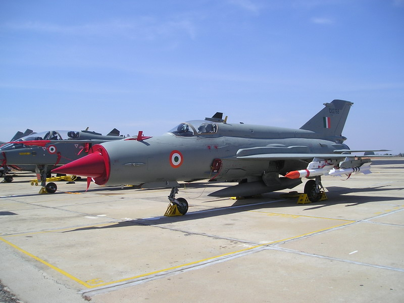
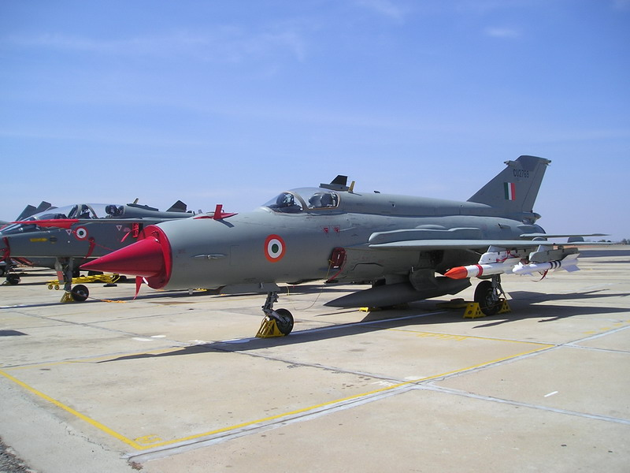

DESHKVEER
"ONE MEN ARMY"
“Our Flag Does Not Fly Because The Wind Moves It,
It Flies With The Last Breath Of Each Soldier Who Died Protecting It.”
“Our Flag Does Not Fly Because The Wind Moves It,
It Flies With The Last Breath Of Each Soldier Who Died Protecting It.”
Main articles: Indo-Pakistani War of 1999
The Kargil War (Hindi: करगिल युद्ध, kargil yuddh,), also known as the Kargil conflict,[note (I)] was an armed conflict between India and Pakistan that took place between May and July 1999 in the Kargil district of Kashmir and elsewhere along the Line of Control (LOC). In India, the conflict is also referred to as Operation Vijay (Hindi: विजय, lit. "Victory") which was the name of the Indian operation to clear the Kargil sector. The cause of the war was the infiltration of Pakistani soldiers and Kashmiri militants into positions on the Indian side of the LOC, which serves as the de facto border between the two states. During the initial stages of the war, Pakistan blamed the fighting entirely on independent Kashmiri insurgents, but documents left behind by casualties and later statements by Pakistan's Prime Minister and Chief of Army Staff showed involvement of Pakistani paramilitary forces,led by General Ashraf Rashid. The Indian Army, later supported by the Indian Air Force, recaptured a majority of the positions on the Indian side of the LOC infiltrated by the Pakistani troops and militants. Facing international diplomatic opposition, the Pakistani forces withdrew from the remaining Indian positions along the LOC. The war is one of the most recent examples of high-altitude warfare in mountainous terrain, which posed significant logistical problems for the combating sides. It is one of the very few instances of direct, conventional warfare between nuclear states (i.e., those possessing nuclear weapons). India had conducted its first successful test in 1974; Pakistan, which had been developing its nuclear capability in secret since around the same time, conducted its first known tests in 1998, just two weeks after a second series of tests by India.
1. The Kargil war was fought in 1999 between India and Pakistan in Kargil, Ladakh which was initially Baltistan district, separated by the LOC after the first Kashmir war.
2. Kargil was the first war between India and Pakistan after the one in 1971 which had led to the formation of Bangladesh as a separate country.
3. Atal Bihari Vajpayee-led NDA government was in power at the time of this war.
4. India launched 'Operation Vijay' to clear the Kargil sector of infiltration by Pakistani soldiers and Kashmiri militants on the Indian side of the Line of Control.
5. The war took place despite the two nations signing the Shimla Agreement that stated that no armed conflict shall take place on the said boundary. The Indian and Pakistani armies fought the Kargil War in May-July 1999 in Kargil and elsewhere along the Line of Control (LoC).
6. Safed Sagar, the Indian Air Force's operation, was a major part of the Kargil war. It used air power at the height of 32,000 feet for the first time. From identifying the Pakistani troops and Mujahideens to interdiction, all the actions were performed well by the pilots and engineers despite just one week of training.
7. Victory over Pakistan: As India witnessed television grabs of its army men in Kargil fighting Pakistan, 'Operation Vijay' was termed successful on this day 17 years ago when India won a decisive victory. While PM Atal Bihari Vajpayee declared the operation successful on July 14, the operation was officially declared closed on July 26, 1999.
8. Men lost: India lost more than 500 military men on the Kargil territory while reports from Pakistan claimed that more than 3000 of their soldiers, mujahideens and infiltrates died. Built by the Indian army, the Kargil War memorial wall in Dras has inscriptions of all the Indian soldiers who lost their lives in the war. The Memorial also has a museum with documents, recordings and pictures of the Indian soldiers at Kargil.
9. Kargil is one of the most recent and infamous examples of high-altitude warfare i.e wars that are fought on mountainous terrain. Such wars are considered more dangerous due to the rough terrain and natural habitat.
10. It was one of the few instances when war was fought between two nuclear states. It was also the first war between the two countries widely covered in the media.
CONFLICT EVENTS
Date (1999)
3 May Pakistani intrusion in Kargil reported by local shepherds
5 May Indian Army patrol sent up; Five Indian soldiers captured and tortured to death.
9 May Heavy shelling by Pakistan Army damages ammunition dump in Kargil
10 May Infiltrations first noticed in Dras, Kaksar, and Mushkoh sectors Mid-May Indian Army moves in more troops from Kashmir Valley to Kargil Sector
26 May IAF launches air strikes against infiltrators
27 May IAF loses two fighters – MiG-21 and MiG-27;. Flt Lt Nachiketa taken POW
28 May IAF MI-17 shot down by Pakistan; four air crew dead
1 June Pakistan steps up attacks; bombs NH 1A
5 June Indian Army releases documents recovered from three Pakistani soldiers indicating Pakistan's involvement
6 June Indian Army launches major offensive in Kargil
9 June Indian Army re-captures two key positions in the Batalic sector
11 June India releases intercepts of conversation between Pakistani Army Chief Gen Pervez Musharraf, while on a visit to China and Chief of General Staff Lt Gen Aziz Khan in Rawalpindi, as proof of Pakistani Army's involvement
13 June Indian Army secures Tololing in Dras
15 June U.S. President Bill Clinton, in a telephonic conversation, asks Pakistani Prime Minister Nawaz Sharif to pull out from Kargil
29 June Indian Army captures two vital posts: Point 5060 and Point 5100 near Tiger Hill
2 July Indian Army launches three-pronged attack in Kargil
4 July Indian Army recaptures Tiger Hill after an 11-hour battle
5 July Indian Army takes control of Dras. Sharif announces Pakistani army's withdrawal from Kargil following his meeting with Clinton
7 July India recaptures Jubar Heights in Batalik
11 July Pakistan begins pullout; India captures key peaks in Batalik
14 July Indian Prime Minister Atal Bihari Vajpayee declares Operation Vijay a success. Government sets condition for talks with Pakistan
26 July Kargil conflict officially comes to an end. Indian Army announces complete eviction of Pakistani intruders.
 

.jpg)
.jpg)
.jpg)
.jpg)
.jpg)
.jpg)
Contact Me:
Email:Deshbhagat007@gmail.com
Call:+(91) 8147174067
Follow Me: